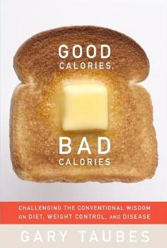

Good Calories, Bad Calories
Good Calories, Bad Calories: Fats, Carbs, and the Controversial Science of Diet and Health (published as The Diet Delusion
in the United Kingdom and Australia) is a 2007 book by science journalist Gary Taubes. Taubes argues that the last few
decades of dietary advice promoting low-fat diets has been consistently incorrect. Taubes contends that carbohydrates,
specifically refined carbohydrates like white flour, sugar, and starches, contribute to obesity, diabetes, heart
disease, and other ailments. Taubes posits a causal link between carbohydrates and cancer, as well.
Synopsis
Taubes points to biological, epidemiological, and anthropological evidence to back up his assertions. The human body
secretes insulin in response to the consumption of carbohydrates in order to regulate blood sugar. This process, in
turn, drives the body to store fat. Taubes elaborates by examining evidence of the effects of carbohydrates on tribes
with a "traditional" diet high in meat or fat and low in carbohydrates. He finds that the introduction of refined
carbohydrates in the diets in these cultures resulted in increased prominence of diseases of civilization like
obesity and heart disease.
Reception
Reviews were mixed for Good Calories, Bad Calories. Physician Tony Miksanek, writing in the Chicago Sun-Times, calls
the book "well-researched" and opines that Taubes’s conclusions are "somewhat startling yet surprisingly convincing."
Journalism professor and food author Michael Pollan describes Good Calories, Bad Calories as "valuable" but believes
that it "does not escape the confines of nutritionism."
New York Times medical reporter Gina Kolata concluded that she was ultimately "not convinced" by Taubes’s arguments,
writing that "the problem with a book like this one, which goes on and on in great detail is that it can be hard
to know what has been left out." Laura Vanderkam reviewed the book somewhat negatively in The American, the
journal of the conservative think tank American Enterprise Institute. Vanderkam believes that the biggest problem
with the book is that Taubes "fashions himself a lonely dissident", causing him to be "so meticulous that at times
the book is unreadably weighty."

Author : Gary Taubes
Language : English
Subject : Diet, obesity
Publisher :Alfred A. Knopf
Publication date : September 25, 2007
Followed by Why We Get Fat: And What to Do About It